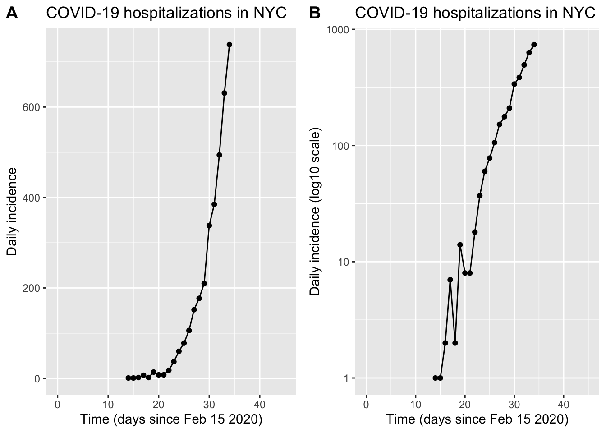
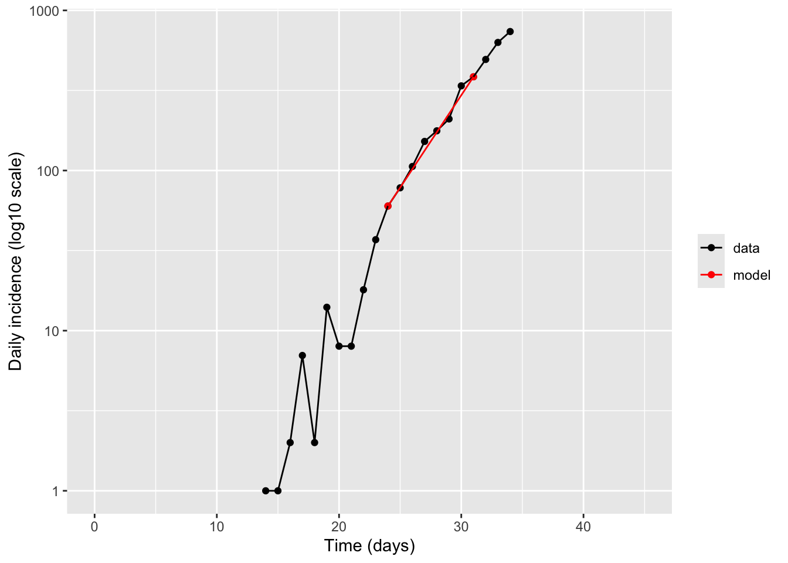
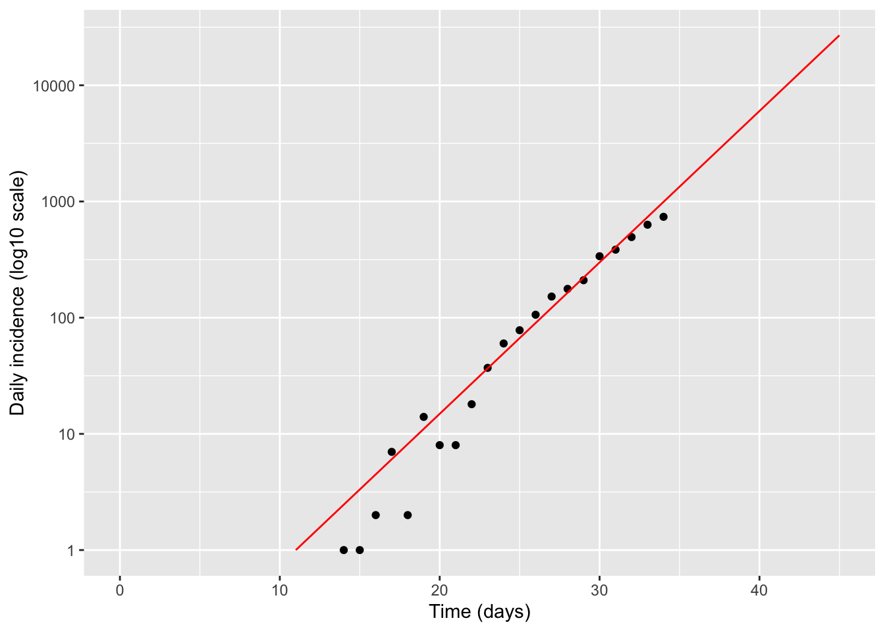
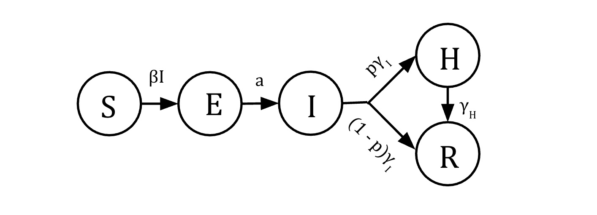
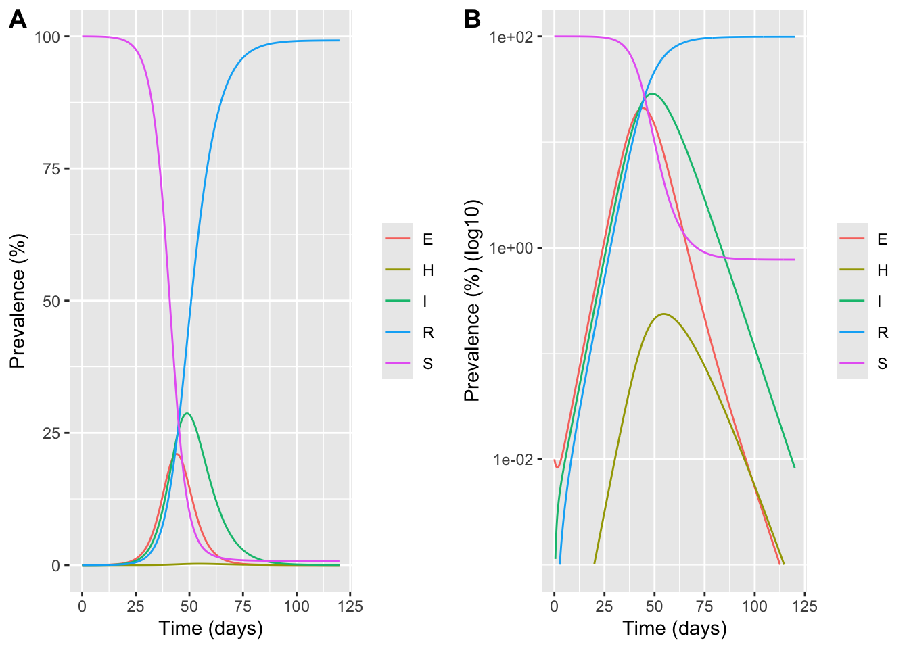
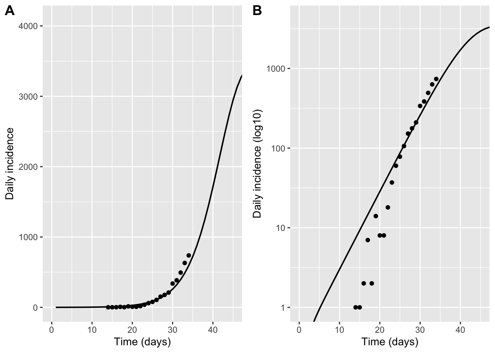
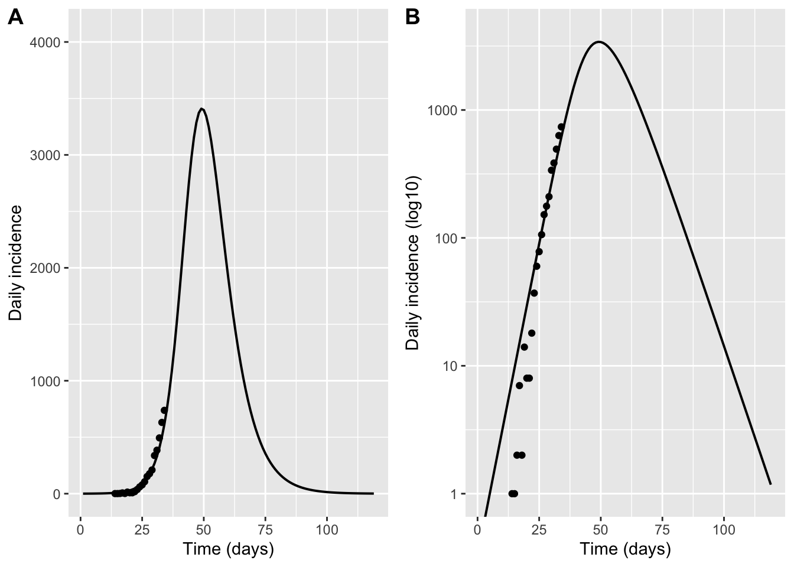
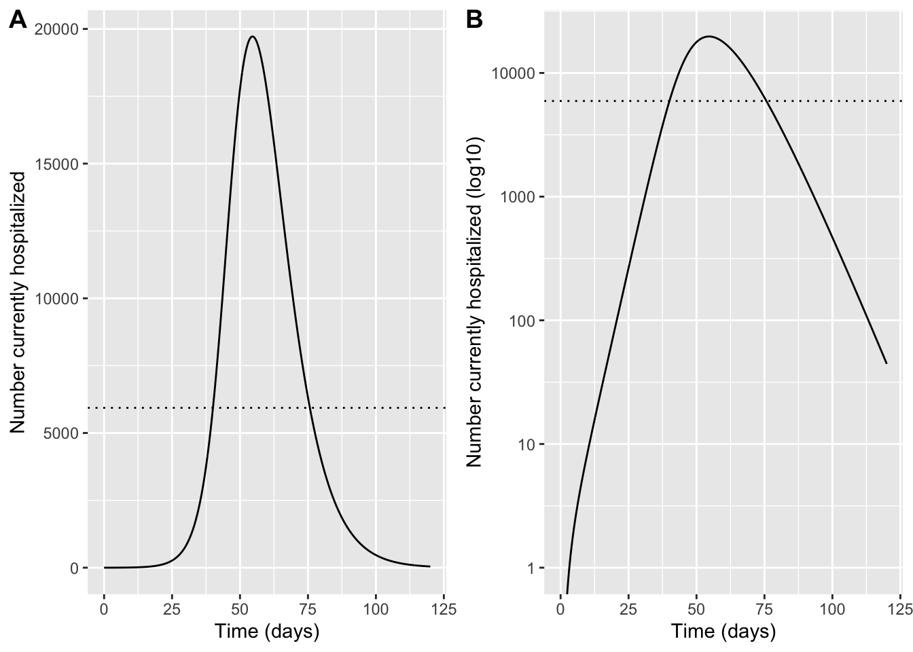
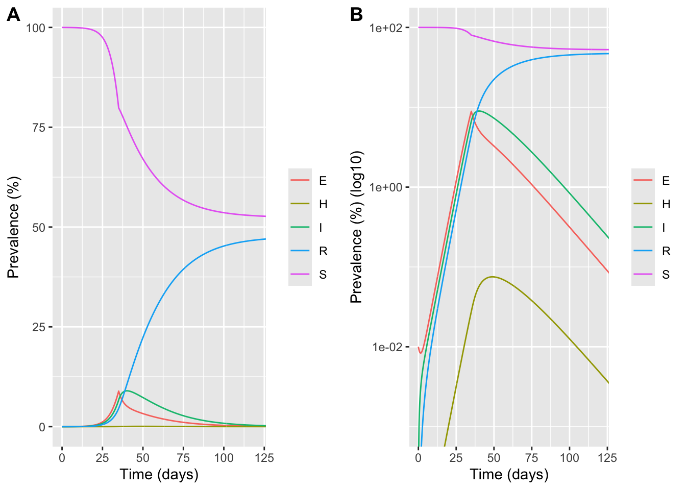
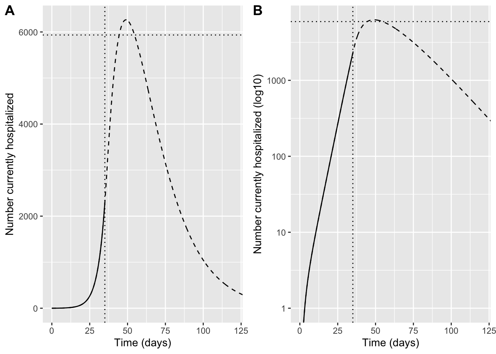

library(tidyverse)
library(deSolve)
library(cowplot)Outbreak Investigation Answers
Exercise Introduction
Imagine it is early March 2020 in New York City, and COVID-19 is spreading rapidly. Policy makers want to make predictions about the future burden of disease in the city. The EEB313 Outbreak Task Force has been asked to advise the New York City Department of Health on the future trajectory of the epidemic and, the healthcare burden, and the impact of potential control measures. All we have at our disposal to do this is disease data through March 20, 2020 and our basic understanding of the transmission dynamics of infections:
Data
The available data we have are the number of people newly admitted to the hospital each day with diagnosed COVID-19 infection. Days are counted relative to Feb 15, 2020, when the first local hospitalization occurred.
N_data <- 8.33e6 # population size of NYC
hosp_data <- data.frame(
day = c(14,15,16,17,18,19,20,21,22,23,24,25,26,27,28,29,30,31,32,33,34),
hosp = c(1,1,2,7,2,14,8,8,18,37,60,78,106,152,177,210,338,385,494,631,738)
)Question 1: Is there evidence that COVID-19 is spreading uncontrolled between people (i.e, exponential growth)? Make a plot of the disease trajectory so far, including axis labels, transformations, and anything else needed to make it easy to read. How quickly is the epidemic spreading? Can you quantify growth of the epidemic using either an exponential growth rate or a doubling time? See hints below:
plot_tmax <- 45
plot_linear <- ggplot(hosp_data, aes(day, hosp)) +
geom_point() +
geom_line() +
xlim(0, plot_tmax) +
labs(x = "Time (days since Feb 15 2020)", y = "Daily incidence",
title = "COVID-19 hospitalizations in NYC")
plot_log <- plot_linear +
scale_y_log10() +
labs(y = "Daily incidence (log10 scale)")
plot_grid(plot_linear, plot_log, labels = "AUTO")
Fitting exponential growth
Method 1: Exponential growth rate from two points. Choose two time points along the curve and estimate exponential growth rate by calculating a simple rate of change between them. You can use the following code as a template
ind1 <- 11 # (Python used 0-based indices; here we use 1-based)
ind2 <- 18
r <- (log(hosp_data$hosp[ind2]) - log(hosp_data$hosp[ind1])) /
(hosp_data$day[ind2] - hosp_data$day[ind1])
t2 <- log(2) / r
sprintf("exponential growth rate r = %.2f /day", r)[1] "exponential growth rate r = 0.27 /day"sprintf("doubling time t2 = %.1f days", t2)[1] "doubling time t2 = 2.6 days"hosp_data_w_model <- rbind(hosp_data %>% mutate(flag = "data"), hosp_data[c(ind1,ind2),] %>% mutate(flag = "model"))
ggplot(hosp_data_w_model, aes(day, hosp, color = flag)) +
geom_point() +
geom_line() +
scale_y_log10() +
xlim(0, plot_tmax) +
scale_colour_manual(values = c("black", "red")) +
labs(x = "Time (days)", y = "Daily incidence (log10 scale)", color = NULL)
Method 2 : Try another way to estimate the exponential growth rate using the whole curve. Just by trial and error (ie, without any formal fitting) try to find an exponential curve that matches the data reasonably well. Use the following code as a template
# Guess parameters until model matches data
t_zero <- 11 # day of first hospitalization
r_exp <- 0.3 # exponential growth rate (1/day)
t_exp_model <- seq(t_zero, plot_tmax, by = 1)
hosp_exp_model <- exp(r_exp * (t_exp_model - t_zero))
exp_df <- data.frame(day = t_exp_model, hosp = hosp_exp_model)
ggplot() +
geom_point(data = hosp_data, aes(day, hosp),color = "black") +
geom_line(data = exp_df, aes(day, hosp), color = "red") +
scale_y_log10() +
xlim(0, plot_tmax) +
labs(x = "Time (days)", y = "Daily incidence (log10 scale)")
Question 2: Using the results of each of your fits above, how many people do we expect to be hospitalized by April 1st, 2020 without any additional control measures?
#Assume April 1 corresponds to Day 45
# Method 1
print(hosp_data$hosp[ind2]*exp(r*(45 - hosp_data$day[ind2])))[1] 15851.84# Method 2
print(exp(r_exp * (45 - t_zero)))[1] 26903.19Question 3: What about by May 1st, 2020?
#Assume May 1 corresponds to Day 75
# Method 1
print(hosp_data$hosp[ind2]*exp(r*(75 - hosp_data$day[ind2])))[1] 45706446# Method 2
print(exp(r_exp * (75 - t_zero)))[1] 217998775Question 4: Do these values seem realistic? (Hint: Try dividing them by the total population of NYC, encoded in variable N_data). What are the assumptions behind this projection method? When do you think they break down? How can we relax these assumptions?
Model
We will create a simple mechanistic mathematical model for COVID-19 transmission and clinical progression, calibrate this to the observed data, and use this to make improved projections about the future trajectory of the epidemic. This model is a type of “compartmental” model of disease dynamics (an expansion of the simple “SIR” model you may have heard of) and is encoded as differential equations which we will simulate here.
knitr::include_graphics("figures/COVID_hosp_model.jpg")
Equations
\[\begin{align} \dot{S} &= -\beta S I\\ \dot{E} &=\beta S I - a E \\ \dot{I} &= a E - \gamma_I I\\ \dot{H} &= p \gamma_I I - \gamma_H H \\ \dot{R} & = (1-p)\gamma_I I + \gamma_H H\\ \end{align}\]Variables
- \(S\): Susceptible individuals
- \(E\): Exposed individuals in the latent phase of infection - infected but not yet infectious
- \(I\): Infected (and infectious) individuals with mild infection
- \(H\): Infected invididuals with severe infection requiring hospitalization
- \(R\): individuals who a removed, either because they have recovered from disease and are now immune, or they have died
- \(N=S+E+I + H +R\): Total population size (constant)
Parameters
- \(\beta\) rate at which infected individuals contact susceptibles and infect them
- \(a\) rate of progression from the exposed to infected class. \(1/a\) is the average duration of the latent period.
- \(\gamma_I\) rate at which infected individuals progress to either recover from infection (and becoming immune), or developing severe disease. \(1/\gamma_I\) is the average duration of infection
- \(p\) proportion of individuals that progress to severe disease (requiring hospitalization)
- \(\gamma_H\) rate of progression from severe disease (to recovery + immunity, or to death). \(1/\gamma_H\) is the average duration of hospitalization
Question 5: Examine the model of COVID-19 above. Answer the following questions:
What stages of infection does someone infected with SARS-CoV-2 pass through?
At what stage can someone transmit the infection to others?
Which parameters do you think are most important for determining how quickly the disease spreads?
Which parameters do you think are most important for determining how deadly the outbreak is?
What sort of information/data would you need to estimate the values of the parameters 𝑎, 𝛾𝐼, 𝑝, or 𝛾𝐻 ?
Define differential equations
Question 6: Fill in the rest of the code to simulate the differential equations for the model, based on the model definition above
seir <- function(t, y, parms) {
with(as.list(c(y, parms)), {
dy <- rep(0, 7)
# Prevalence equations
dy[1] <- -beta * I * S # S
dy[2] <- beta * I * S - a * E # E
dy[3] <- a * E - gI * I # I
dy[4] <- p * gI * I - gH * H # H
dy[5] <- (1 - p) * gI * I + gH * H # R
# Extra equations to track cumulatives (ignore for now)
dy[6] <- a * E # cumulative infections (new infections entering I)
dy[7] <- p * gI * I # cumulative hospitalizations (flow into H)
list(dy)
})
}Simulations
Question 7: We want to calibrate the model so that the hospitalizations predicted by the model (H compartment) roughly match those observed through March 20, 2020. You can do this visually by entering your best guess for the parameters below, then running the code and comparing the model prediction to the data. Keep tuning the parameters until you get a reasonable match, paying attention to what aspect of the curves each parameter is influencing. List the values of the parameters you used.
Hint: While you are welcome to ignore this, you might notice from the code that we have to do a few extra data manipulation steps before we can do that. The data represents the absolute number of individuals who are newly admitted to the hospital each day. However, in the model, the H compartment represents the fraction of the population that is currently in the hospital. In general people with COVID-19 stay in the hospital for multiple days to weeks, so this value includes individuals who were admitted over multiple days. To compare the model to data we need to first extract from the model the fraction of the population that newly enters the H compartment each day. We do this by making the model additionally track the cumulative number of people who have ever entered the H compartment, and then extract how much this value increases each day. We use the total population size to go from fractions of the population to total numbers.
Parameters
For the first set of parameters, try to start with reasonable values based on what you know about COVID-19 transmission
LatentPeriod <- 4 # latent period (days)
DurInfect <- 7 # duration infectious (days)
FracSevere <- 0.01 # fraction severe requiring hospitalization (0-1)
DurHosp <- 7 # duration of hospitalization (days)For the second set of parameters, you will have to change the values to try to match the model output to the existing data
b <- 0.7 # probability per day of transmitting infection onwards
InitialPrev <- 0.0001 # fraction of the population infected on Feb 15 (time 0)Translate parameters into model form
N <- N_data # equations are scale-free; keep N here for readability
beta <- b / N # transmission parameter in this formulation
a <- 1 / LatentPeriod
p <- FracSevere
gI <- 1 / DurInfect
gH <- 1 / DurHosp
sprintf("Beta = %4.2e", beta)[1] "Beta = 8.40e-08"sprintf("Rate of progression to infectiousness (a) = %4.2f", a)[1] "Rate of progression to infectiousness (a) = 0.25"sprintf("Rate of recovery from infection (gamma_I) = %4.2f", gI)[1] "Rate of recovery from infection (gamma_I) = 0.14"sprintf("Rate of recovery from hospitalization (gamma_H) = %4.2f", gH)[1] "Rate of recovery from hospitalization (gamma_H) = 0.14"sprintf("Basic reproduction number (R_0) = %4.2f", b/a)[1] "Basic reproduction number (R_0) = 2.80"Simulate without intervention
Run and visualize model output
Note that the output of the model is designed to be the number of individuals in the population that is in each state at each timepoint. We can transform this into a prevalence by dividing by the population size and changing to a %
tmax <- 120
tvec <- seq(0, tmax, by = 0.1)
ic <- c(
S = N - InitialPrev * N, # S0
E = InitialPrev * N, # E0
I = 0,
H = 0,
R = 0,
CumInf = 0,
CumHosp = 0
)
parms <- c(beta = beta, a = a, gI = gI, p = p, gH = gH)
sol <- ode(y = ic, times = tvec, func = seir, parms = parms) %>% as.data.frame()
head(sol) time S E I H R CumInf CumHosp
1 0.0 8329167 833.0000 0.00000 0.000000000 0.0000000 0.00000 0.000000000
2 0.1 8329166 813.1466 20.42597 0.001461413 0.1453783 20.57281 0.001468397
3 0.2 8329164 795.1687 40.09296 0.005744688 0.5742426 40.67295 0.005799873
4 0.3 8329161 778.9694 59.05707 0.012706184 1.2762995 60.34607 0.012890057
5 0.4 8329156 764.4582 77.37125 0.022212032 2.2420248 79.63549 0.022642368
6 0.5 8329150 751.5500 95.08558 0.034137540 3.4626189 98.58234 0.034967564Transform this output into long form using pivot_longer, creating a new column called compartment that contains the stage of infection and another called count which contains the number of observations in this stage at this timepoint. Just keep the compartments between S and R (ie not the “cumulative” ones). Create a new column called prevalence_pct which is the percent of individuals in the population in that stage of infection. Show a preview of this data frame:
sol_long <- sol %>%
select(time, S:R) %>%
pivot_longer(-time, names_to = "compartment", values_to = "count") %>%
mutate(prevalence_pct = 100 * count / N)
head(sol_long)# A tibble: 6 × 4
time compartment count prevalence_pct
<dbl> <chr> <dbl> <dbl>
1 0 S 8329167 100.0
2 0 E 833 0.01
3 0 I 0 0
4 0 H 0 0
5 0 R 0 0
6 0.1 S 8329166. 100.0 Plot the results over time (on both linear and log scale):
plot_linear <- ggplot(sol_long, aes(time, prevalence_pct, color = compartment)) +
geom_line() +
labs(x = "Time (days)", y = "Prevalence (%)", color = NULL)
plot_log <- ggplot(sol_long, aes(time, prevalence_pct, color = compartment)) +
geom_line() +
scale_y_log10(limits=c(0.001, 100)) +
labs(x = "Time (days)", y = "Prevalence (%) (log10)", color = NULL)
plot_grid(plot_linear, plot_log, labels = "AUTO")Warning in scale_y_log10(limits = c(0.001, 100)): log-10 transformation
introduced infinite values.Warning: Removed 127 rows containing missing values or values outside the scale range
(`geom_line()`).
Compare model to data
Now, we’ll do the final steps to be able to compare our model output to the observed data! Data is only reported at daily intervals, and is reported as “incidence” values (# of new cases) instead of “prevalence” values, so we’ll manipulate our model output to mimic that.
# Calculate daily incidence from cumulative
# Sample at (approximately) integer days
sol_daily <- sol %>%
mutate(day = floor(time)) %>%
group_by(day) %>%
slice_min(order_by = abs(time - day), n = 1, with_ties = FALSE) %>%
ungroup() %>%
filter(day >= 0, day <= (tmax - 1)) %>%
arrange(day)
inc_daily <- sol_daily %>%
transmute(
day = day,
inc_inf = c(NA, diff(CumInf)),
inc_hosp = c(NA, diff(CumHosp))
) %>%
filter(!is.na(inc_hosp))
# Scale model to NYC population (in case N differs)
model_hosp <- inc_daily %>%
mutate(hosp = (N_data / N) * inc_hosp)
ymax <- max(c(model_hosp$hosp, hosp_data$hosp), na.rm = TRUE) * 1.2
p_inc_lin <- ggplot() +
geom_line(data = model_hosp, aes(day, hosp), linewidth = 0.7) +
geom_point(data = hosp_data, aes(day, hosp)) +
coord_cartesian(xlim = c(0, plot_tmax), ylim = c(0, ymax)) +
labs(x = "Time (days)", y = "Daily incidence")
p_inc_log <- ggplot() +
geom_line(data = model_hosp, aes(day, hosp), linewidth = 0.7) +
geom_point(data = hosp_data, aes(day, hosp)) +
scale_y_log10() +
coord_cartesian(xlim = c(0, plot_tmax), ylim = c(1, ymax)) +
labs(x = "Time (days)", y = "Daily incidence (log10)")
plot_grid(p_inc_lin,p_inc_log, labels = "AUTO")
Repeat the last few cells, changing the parameter values until you find something that is a reasonable match.
Estimate time of first case
Question 8: When do you estimate that the first case of COVID-19 occurred in NYC? Try this two ways
Method 1: Use your estimated value from the full model for the initial fraction infected at time zero (InitialPrev), along with your simple estimate for the exponential growth rate, and then back out how may days ago infections were exactly 1 using the formula for exponential growth
time_since_index <- log(InitialPrev * N_data / 1) / r
sprintf("Inferred days before Feb 15 2020 that first infection occurred = %.1f days", time_since_index)[1] "Inferred days before Feb 15 2020 that first infection occurred = 25.3 days"Method 2: Run the full model as above, but force the initial fraction of infected (InitialPrev) to be 1/N, and figure out what t_zero value you need to get a match with the data (note: since t_zero is relative to Feb 15, 2020, you’ll likely need it to be negative, which is fine!)
t_zero <- -30 # TODO: choose a negative value so that it occurs BEFORE Feb 15
sprintf("Inferred days before Feb 15 2020 that first infection occurred = %.1f days", -t_zero)[1] "Inferred days before Feb 15 2020 that first infection occurred = 30.0 days"InitialPrev0 <- 1 / N_data # one infected person at time 0 (approx)
tmax <- 120
tvec2 <- seq(t_zero, tmax, by = 0.1)
ic2 <- c(
S = N - InitialPrev0 * N,
E = InitialPrev0 * N,
I = 0,
H = 0,
R = 0,
CumInf = 0,
CumHosp = 0
)
sol2 <- ode(y = ic2, times = tvec2, func = seir, parms = parms) %>% as_tibble()
# Repeat daily-incidence comparison
sol2_daily <- sol2 %>%
mutate(day = floor(time)) %>%
group_by(day) %>%
slice_min(order_by = abs(time - day), n = 1, with_ties = FALSE) %>%
ungroup() %>%
filter(day >= 0, day <= (tmax - 1)) %>%
arrange(day)
inc2_daily <- sol2_daily %>%
transmute(
day = day,
inc_hosp = c(NA, diff(CumHosp))
) %>%
filter(!is.na(inc_hosp)) %>%
mutate(hosp = (N_data / N) * inc_hosp)
ymax2 <- max(c(inc2_daily$hosp, hosp_data$hosp), na.rm = TRUE) * 1.2
p_inc_lin <- ggplot() +
geom_line(data = inc2_daily, aes(day, hosp), linewidth = 0.7) +
geom_point(data = hosp_data, aes(day, hosp)) +
coord_cartesian(ylim = c(0, ymax2)) +
labs(x = "Time (days)", y = "Daily incidence")
p_inc_log <- ggplot() +
geom_line(data = inc2_daily, aes(day, hosp), linewidth = 0.7) +
geom_point(data = hosp_data, aes(day, hosp)) +
scale_y_log10() +
coord_cartesian(ylim = c(1, ymax2)) +
labs(x = "Time (days)", y = "Daily incidence (log10)")
plot_grid(p_inc_lin,p_inc_log, labels = "AUTO")Don't know how to automatically pick scale for object of type <deSolve/matrix>.
Defaulting to continuous.
Don't know how to automatically pick scale for object of type <deSolve/matrix>.
Defaulting to continuous.
Evaluate hospital capacity
Question 9: Will COVID-19 hospitalizations exceed the capacity of NYC hospitals to treat them? When do we expect this to occur?
To estimate hospital capacity, we use national statistics on the average number of hospital beds per capita (2.6 per 1000), and the average occupancy of those beds (due to other health concerns, which is 66% on average throughout the year but increased by 10% during the winter months due to influenza and other seasonal respiratory viruses). Note that we can now go back to using the prevalence of hospitalizations, since this is what matches with the measured used for hospital capacity
AvailHospBeds <- 2.6 * (1 - 0.66 * 1.1) # available beds per 1000, based on total beds and occupancy
h_cap <- AvailHospBeds * (N_data / 1000)
hprev <- sol %>%
transmute(time = time, hosp = (N_data / N) * H)
p_hosp_lin <- ggplot(hprev, aes(time, hosp)) +
geom_line() +
geom_hline(yintercept = h_cap, linetype = "dotted") +
coord_cartesian(xlim = c(0, 120)) +
labs(x = "Time (days)", y = "Number currently hospitalized")
p_hosp_log <- ggplot(hprev, aes(time, hosp)) +
geom_line() +
geom_hline(yintercept = h_cap, linetype = "dotted") +
scale_y_log10() +
coord_cartesian(xlim = c(0, 120), ylim = c(1, NA)) +
labs(x = "Time (days)", y = "Number currently hospitalized (log10)")
plot_grid(p_hosp_lin,p_hosp_log, labels = "AUTO")Warning in scale_y_log10(): log-10 transformation introduced infinite values.
Estimate the impact of interventions
Question 10: What degree of social distancing is required to avoid infection levels growing to the point that hospitals no longer have the capacity to treat severe cases?
Run and visualize model output with an intervention
Try different values of the intervention efficacy parameter (which describes the extent to which transmission is reduced) to see how much you need to prevent hospitalizations from exceeding the capacity of the healthcare system. The value you need could vary a lot depending on which values you chose earlier for the disease parameters
First plot all the model output once you add an intervention:
IntervEff <- 0.8 # TODO: intervention efficacy (0-1) fractional reduction in; transmission (ie 0.1 corresponds to 10% reduction in transmission, or 90% transmission continuing)
t_int <- 35 # day intervention implemented (March 20, 2020)
tmax_int <- 100 # days to run post intervention
tmax_all <- t_int + tmax_int
# Pre-intervention run
t_pre <- seq(0, t_int, by = 0.1)
ic_pre <- ic
sol_pre <- ode(y = ic_pre, times = t_pre, func = seir, parms = parms) %>% as.data.frame()
# Use last state as initial condition for post-intervention
y_last <- sol_pre %>% slice_tail(n = 1) %>% select(-time) %>% as.numeric()
names(y_last) <- names(ic)
# Post-intervention parameters: reduce beta
parms_post <- parms
parms_post["beta"] <- parms["beta"] * (1 - IntervEff)
t_post <- seq(t_int, tmax_all, by = 0.1)
sol_post <- ode(y = y_last, times = t_post, func = seir, parms = parms_post) %>% as.data.frame()
# Combine (avoid duplicating t_int row)
sol_all <- bind_rows(sol_pre, sol_post %>% filter(time > t_int))
# Prevalence plots with intervention
sol_all_long <- sol_all %>%
select(time, S:R) %>%
pivot_longer(-time, names_to = "compartment", values_to = "count") %>%
mutate(prevalence_pct = 100 * count / N)
p_lin <- ggplot(sol_all_long, aes(time, prevalence_pct, color = compartment)) +
geom_line() +
coord_cartesian(xlim = c(0, 120), ylim = c(0, 100)) +
labs(x = "Time (days)", y = "Prevalence (%)", color = NULL)
p_log <- ggplot(sol_all_long, aes(time, prevalence_pct, color = compartment)) +
geom_line() +
scale_y_log10() +
coord_cartesian(xlim = c(0, 120), ylim = c(0.001, 100)) +
labs(x = "Time (days)", y = "Prevalence (%) (log10)", color = NULL)
plot_grid(p_lin,p_log, labels = "AUTO")Warning in scale_y_log10(): log-10 transformation introduced infinite values.
Then make a plot specifically to compare predicted hospitalizations to capacity
hprev_pre <- sol_pre %>% transmute(time, hosp = (N_data / N) * H, scenario = "no intervention")
hprev_post <- sol_all %>% transmute(time, hosp = (N_data / N) * H, scenario = "with intervention")
p_int_lin <- ggplot() +
geom_line(data = hprev_pre, aes(time, hosp)) +
geom_line(data = hprev_post, aes(time, hosp), linetype = "dashed") +
geom_hline(yintercept = h_cap, linetype = "dotted") +
geom_vline(xintercept = t_int, linetype = "dotted") +
coord_cartesian(xlim = c(0, 120)) +
labs(x = "Time (days)", y = "Number currently hospitalized")
p_int_log <- ggplot() +
geom_line(data = hprev_pre, aes(time, hosp)) +
geom_line(data = hprev_post, aes(time, hosp), linetype = "dashed") +
geom_hline(yintercept = h_cap, linetype = "dotted") +
geom_vline(xintercept = t_int, linetype = "dotted") +
scale_y_log10() +
coord_cartesian(xlim = c(0, 120), ylim = c(1, NA)) +
labs(x = "Time (days)", y = "Number currently hospitalized (log10)")
plot_grid(p_int_lin,p_int_log, labels = "AUTO")Warning in scale_y_log10(): log-10 transformation introduced infinite values.
log-10 transformation introduced infinite values.
Question 11: Why do hospitalizations continue to increase for some time even after strong social distancing is implemented and infections are decreasing?